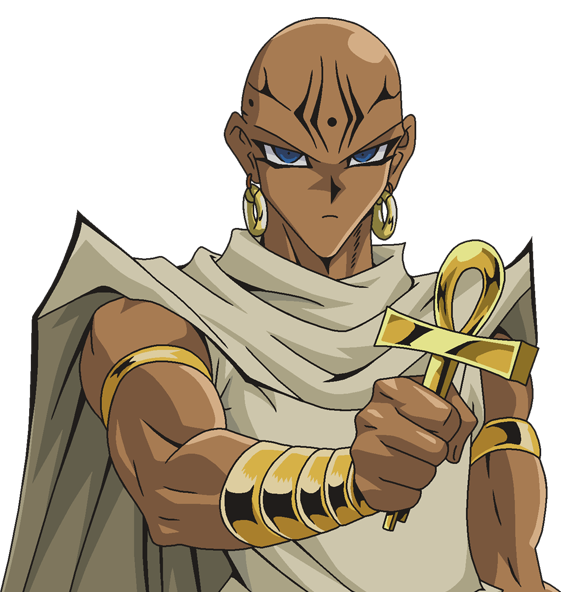

-
Joey Wheeler

Descrição
Outrora um garoto de rua selvagem e durão, Joey aprendeu o valor da amizade e se tornou um amigo leal de Yugi. Embora a dura origem de rua de Joey ocasionalmente o torne cabeça quente e rápido demais para agir, ele tem um coração de ouro e faria qualquer coisa por seus amigos, especialmente por sua irmã mais nova, que mora longe dele.
-
Yami Yugi

Descrição
O jovem e de olhos de aço Yami Yugi é um duelista extraordinário e confiante que trava a batalha final nos Jogos das Sombras. Mas quem é Yami Yugi? O espírito confinado no Enigma do Milênio é o espírito do antigo Faraó Egípcio que trancou os Jogos das Sombras há milênios.
-
Shada
Descrição
Com sua Chave do Milênio, Shada poderia olhar dentro do coração de um criminoso e observar se uma criatura maligna estava se banqueteando com sua alma. Corajoso e nobre, Shada nunca vacilou diante do perigo.
-
Téa Gardner

Descrição
Entre todos os amigos de Yugi, Téa é a voz da razão. Amiga de infância de Yugi, Téa também é a maior torcedora do grupo, sempre incentivando todos a acreditarem em si mesmos e nunca desistirem. Téa ama muito seus amigos e está disposta a ajudá-los no que puder.
-
Ishizu Ishtar

Descrição
Com seu Colar do Milênio, Ishizu teve a capacidade de ver o futuro. Ela previu que se ninguém parasse Marik, ele levaria o planeta inteiro à beira do caos. Ishizu fez o possível para argumentar com Marik, mas falhou, e Marik roubou dois dos três deuses egípcios.
-
Yami Marik

Descrição
Mais implacável e inteligente do que Pegasus, o tortuoso Marik possui o poderoso Millennium Rod que lhe permite controlar outros para cumprirem suas ordens. Contudo, seria um erro pensar que ele precisa de lacaios para vencer; suas habilidades de duelo incomparáveis são mais que suficientes para alcançar a vitória! Ele não vai parar até derrotar Yugi e ganhar o poder do Faraó para controlar o mundo!